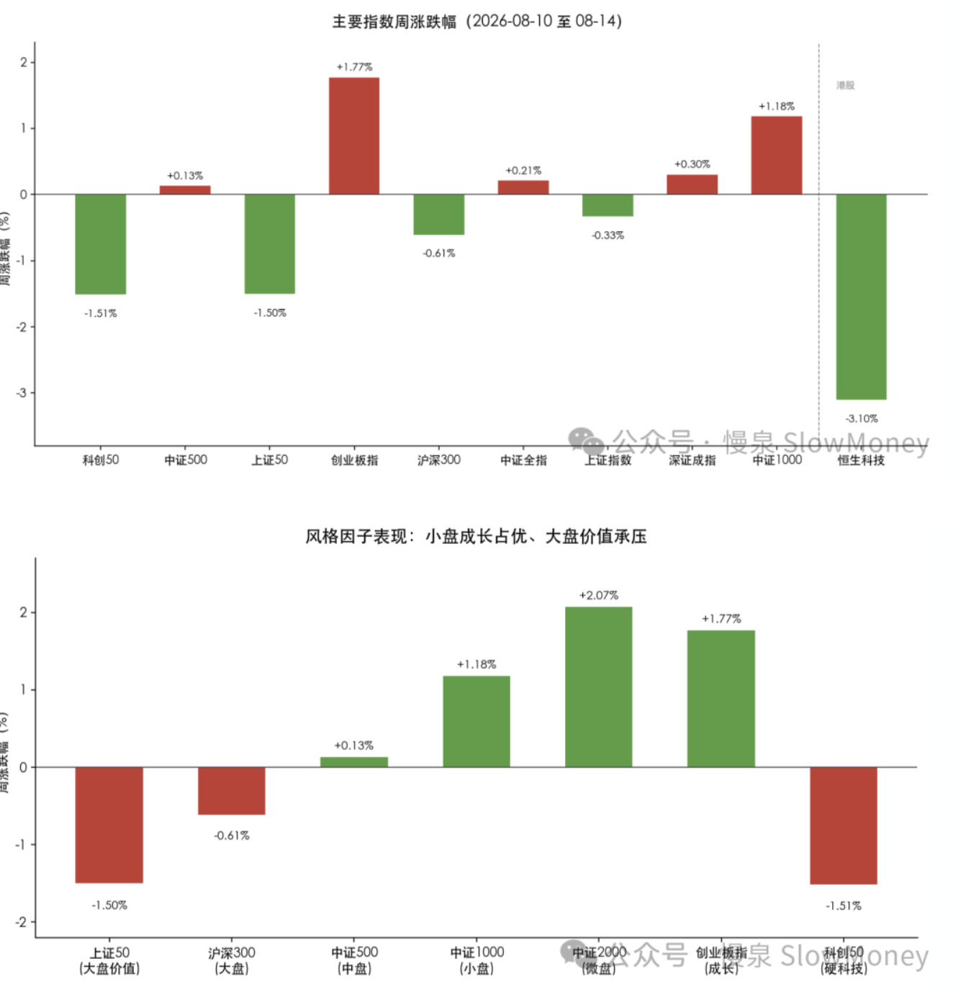

投资备忘20260815-你的杠铃我的杠铃好像不一样
2026-08-10 — 2026-08-15 · W33 · 周度备忘（补档）
本周市场很无聊，得空翻了翻策略报告，发现这几年策略讲杠铃策略，身边的朋友们也开始杠铃配置。据我的观察，包括我自己有时候声称的杠铃策略，最近结局分三类：第一类是对冲型杠铃，手里拿着两端跷跷板资产，任何一种情况都会有资产涨，但最后算账白玩；第二种是胡椒面杠铃，手里基金要啥有啥，各种"杠铃"，最后基本上是指数；第三种是头孢配白酒式的杠铃，两类资产有对冲属性但都被第三类资产吸血，最后都走坏。到底怎样的杠铃才不至于刻舟求剑？
杠铃策略
杠铃策略的解释和传统类型：Barbell Strategy，又称"哑铃式投资"，是一种通过配置低波动稳健资产和高波动高收益资产来构建投资组合的管理技术。该策略的理论基石是纳西姆·尼古拉斯·塔勒布提出的"反脆弱理论"。
配置要求：在股市中，杠铃策略通常表现为"保守 + 积极"的两端配置。
防守端（压舱石）配置低波动、稳健的避险资产，如红利低波资产、高股息蓝筹股、短期国债或货币市场基金等。
进攻端（成长矛）配置高弹性、高潜力的成长型资产，如科技成长股、AI 产业链、小微盘股等。这部分资产旨在市场向好或行业突破时博取高弹性收益，确保不踏空财富增长的机会。
避开"中庸陷阱"：彻底放弃那些"不好不坏、看似安全"的中间地带资产，例如没有核心竞争力的伪概念股，或既未吃到行业红利又失去市场关注度的高防御、低增长存量股。
杠铃的核心赌点是市场 pattern 识别。你当下的杠铃策略应该是基于你对市场状态未来的一种判断，不存在一种适应所有市场状态的固定策略，这是核心。不然就会变成对冲、胡椒面。当防守端资产和进攻端资产"互为相反数"，或者说大聪明资金让他们成为相反数，杠铃策略就需要更新。
当下市场：
- 市场判断：一般市场不确定性增加或者平抑组合波动采取杠铃策略，当市场有方向性时需要偏离或者加减仓——当前确实是杠铃策略应用的场景；
- 交易时间差：杠铃不一定意味着所有时间都持有防守资产和进攻资产，削峰填谷，通过交易保持一段时间内进攻和防守均衡，也许是更好的应对。简单来讲就是 6 月份减科技、7 月份减红利；
- 寻找中庸资产：当防守和进攻"互为相反数"，进攻和防守资产本身就会产生变化，而定价合适的中庸资产可能成为新的杠铃另一端。
市场情况
市场很无聊的震荡，上不去也下不来的垃圾时间。指数先扬后抑再弱修复，指数层面波澜不惊（上证周跌 0.33%），但内部结构剧烈分化。典型指数沪深 300 下跌 0.6%，中证全指上涨 0.2%，恒生科技下跌 3.1%。成交量温和，没有放大。
资金从大盘红利/价值向小盘成长、算力/光通信/半导体等科技主线集中，形成"抱团科技、弃守价值"的存量博弈格局。港股与 A 股背离，恒生科技周跌 3.10% 拖累明显。市场整体处于震荡市中科技主线强势、其余普跌的阶段。

市场展望
市场反弹到关键位置，3940-4000 之间是上一轮探底的位置，当前反弹到附近有压制指数的需求，以 2021 年的抱团调整经验看，二次探底仍然是基准场景。
宏观：内需仍弱，工业品走出通缩。PPI 同比 +3.5%，转正回升，工业品价格从通缩中逐渐走出。历史上 PPI 上行和弱需求的组合在 2016、2021 年出现过，市场呈现结构性走势，资源品 HALO 资产供给侧压力凸显——其中 2016 年供给侧改革资源品上涨，2021 年能源和新能源结构牛。
市场仍需要时间。当前市场的企稳的前提条件就是时间或者更大的波动，震荡的时间可能延长，这种情况下，控制仓位不上头、继续布局中庸资产、寻找下个周期成长资产。
组合备忘
Beta 组合表现小幅跑输市场（市场是指全 A 指数），Macro 同样。经过 7 月的连续跑赢后开始回调。组合仓位下降：Beta 策略仓位 75%，交易型科技仓位继续下降，增加 HALO 和红利；Macro 策略仓位下降至 60%（其中转债 24%），继续保持谨慎。组合的表现主要受到以下因素影响：
- HALO 资产逆风：特别是电解铝和化工资产本周表现较差；
- 红利资产分化：消费资产下跌，地产涨幅明显；
- 科技弹性资产在反弹后止盈为主，当前以底仓持有为主；机器人本周有表现，但对组合贡献一般。
| 类别 | 仓位 |
|---|---|
| Beta 策略（交易型科技仓位继续下降，增加 HALO 和红利） | 75% |
| Macro 策略权益仓位（含转债 24%，继续保持谨慎） | 60% |
Beta 小幅跑输市场 · Macro 同样 · 周度涨幅不再公开播报
操作和思考：本周的操作以微调为主，继续等待新的信号，保持耐心。科技弹性资产在反弹中止盈，加仓 HALO 资产，红利资产内部换仓。
主要考虑：科技资产的资金结构调整需要时间和力度，时间还没到、力度特别是机构肯定没有减仓；HALO 资产股价弱于商品走势，主要反映了资金结构的差异——股票投资者更博弈，弱美元和供给侧不确定性仍然是核心逻辑，继续看好传导。
下一步：不在垃圾时间耗费精力，关键位置和节点上保持耐心。Beta 仓位维持不高于 75%，开始考虑新的布局方向，并增加案头；Macro 仓位 65%，增仓聚焦在红利和 HALO 资产。
- 成长类资产：科技的第一轮弹性交易接近尾声，创新药的尝试建仓开局良好，继续寻找未来的成长资产；
- 机器人：AI 革命的最强受益硬件，特别是零部件；
- 红利：有明显的回调而且动量较足，跌幅够的红利有向上空间，筛选标准——股息率合适、营收稳定、海外占比；
- HALO 资产：维持持仓。
上期钩子的答案：① 3940-4000 压制与二次探底——垃圾时间验证：指数上不去下不来（上证 -0.33%），压制仍在，二次探底仍是基准场景；② "主线可能不是 AI 硬件"——部分显现：科创 50 -1.51%、光模块放量滞涨后硬科技承压，但资金仍向算力/光通信/半导体集中，结构内部分化，结论未定；③ 红利 -10% 新建仓区间——执行中：红利资产分化（消费跌、地产涨），内部换仓、筛选新标的；④ 硅碳和解路径——未到同涨同跌：中证 2000 +2.07% 与上证 50 -1.50% 继续分化，存量博弈格局延续。新钩子：① 三类失败杠铃（对冲型/胡椒面/头孢配白酒）的对照与"中庸资产成为新杠铃另一端"的验证；② PPI +3.5% 转正 + 弱需求组合——2016/2021 式结构性行情是否重演，资源品 HALO 供给侧逻辑（股价弱于商品的修复传导）；③ Macro 仓位 60% → 65% 的增仓计划执行（聚焦红利和 HALO）；④ 红利筛选三标准（股息率合适、营收稳定、海外占比）的落地标的。对账窗口：2026 年 8 月底。